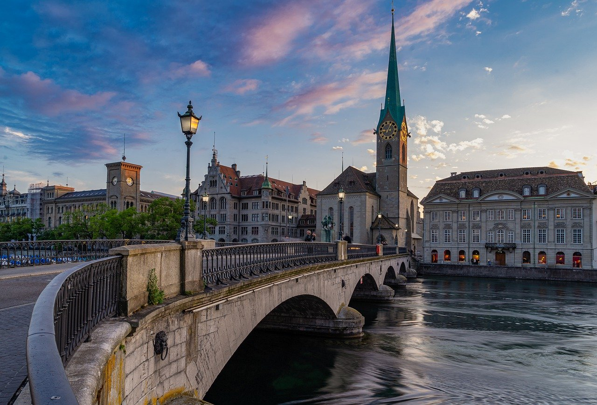
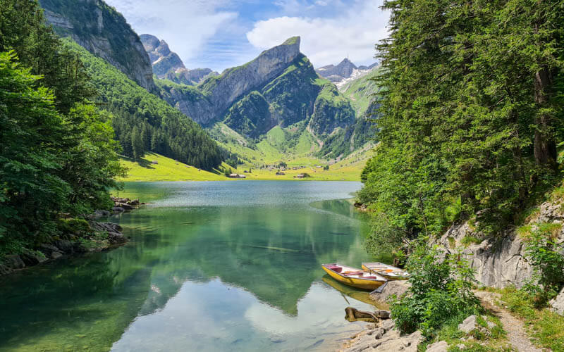
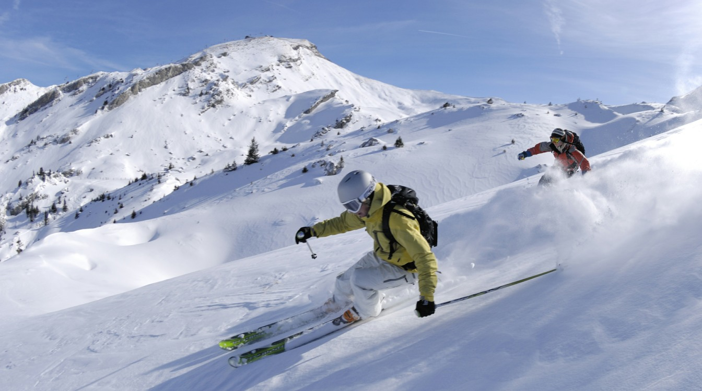
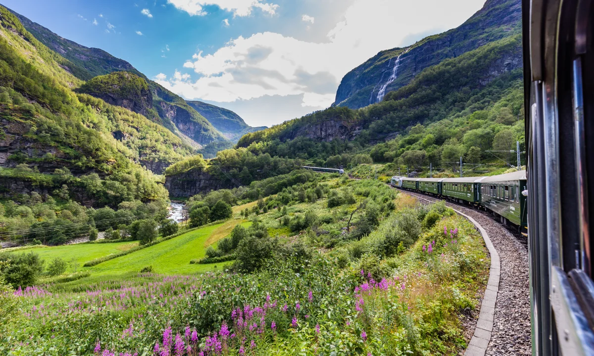

Why Visit Switzerland?
Switzerland is one of Europe's most stunning and diverse destinations. Nestled in the heart of the continent, it borders France, Germany, Austria, Liechtenstein, and Italy — soaking up the best of each culture. Whether you seek high-altitude adventure, quiet lakeside relaxation, or cosmopolitan city life, Switzerland delivers it all with legendary precision and hospitality.

The Swiss Alps
Iconic peaks like the Matterhorn and Jungfrau define Switzerland's skyline. Explore them in winter or summer for unforgettable experiences.

Historic Cities
Bern, Zurich, Geneva, and Lucerne each offer a unique blend of medieval charm and modern sophistication.

Lakes & Valleys
Lake Geneva, Lake Lucerne, and Lake Zurich are among dozens of breathtaking lakes surrounded by dramatic scenery.

Food & Chocolate
Fondue, raclette, Swiss chocolate, and fine cheeses make Switzerland a paradise for food lovers.

World-Class Skiing
Resorts like Verbier, Zermatt, and St. Moritz are legendary among skiers and snowboarders worldwide.

Scenic Rail Journeys
The Glacier Express and Bernina Express rank among the world's most beautiful train rides.
Top Tip for First-Time Visitors
Purchase a Swiss Travel Pass before you arrive — it covers unlimited train, bus, and boat travel across the country, plus free entry to over 500 museums. It's exceptional value for tourists.
Explore Switzerland
Use the navigation above to discover all aspects of Swiss travel. From detailed guides on the Alps and skiing to city spotlights, food culture, wellness retreats, and practical travel tips — everything you need for the perfect Swiss holiday is just a click away.